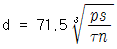
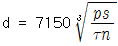
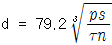
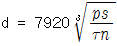
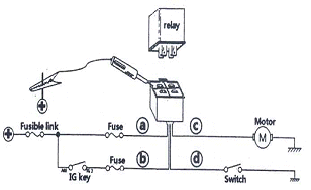
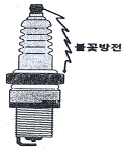
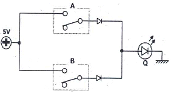
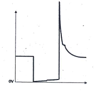
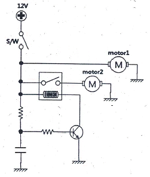

자동차정비산업기사 (2014-05-25 기출문제)
1과목: 일반기계공학
1. 동력 축에서 마력을 ㎰, 허용전단응력 τ(kgf/mm2) 매분회전수 n(rpm), 축의 지름을 d라고 할 때 축의 지름(㎝)을 구하는 식은?




(정답률: 62%)

2. 모듈 3, 잇수 30인 표준 스퍼기어의 외경은 몇 mm인가?
- 85
- 96
- 1⑤
- 116
(정답률: 74%)
3. 원심펌프 송출유량이 0.3m3/min이고, 관로의 손실수두가 8m이다. 펌프 중심에서 1.5m 아래 있는 저수지에서 물을 흡입하여 펌프 중심에서 15m의 높이의 탱크로 양수할 때 펌프의 동력은 몇 kW인가?
- 1
- 1.2
- 2
- 2.2
(정답률: 58%)
4. 2500rpm으로 회전하면서 25kW을 전달하는 전동축이 있다. 이 전동축의 비틀림 모멘트는 몇 Nㆍm인가?
- 7.5
- 9.6
- 70.2
- 95.5
(정답률: 43%)
5. 압출가공에 관한 설명으로 옳지 않은 것은?
- 속이 빈 용기를 만들 때에는 충격압출이 적합하다.
- 납 파이프나 건전지 케이스를 생산하는데 적합하다.
- 단면의 형태가 다양한 직선, 곡선제품의 생산이 가능하다.
- 압출에 의한 표면결함은 소재온도와 가공속도를 늦춤으로써 방지할 수 있다.
(정답률: 77%)
6. 나사의 끝을 침탄처리한 작은 나사로서, 주로 얇은 판의 연결에 사용하며, 암나사를 만들지 않고 드릴 구멍에 끼워 암나사를 내면서 조여지는 나사는?
- 볼 나사(ball screw)
- 세트 스크루(set screw)
- 태핑나사(tapping screw)
- 작은 나사(machine screw)
(정답률: 70%)
7. 펌프에서 캐비테이션이 발생하였을 때 나타나는 현상이 아닌 것은?
- 소음이 발생한다.
- 양정과 유량이 감소한다.
- 침식 및 부식현상이 발생한다.
- 기포가 발생하여 마모를 방지한다.
(정답률: 82%)
8. 나사산의 각도는 60도이고, 보통나사와 가는나사가 있으며 미국, 영국, 캐나다 등 세 나라의 협정나사로서 ABC 나사라고도 하는 것은?
- 관용 나사
- 사다리꼴 나사
- 톱니나사
- 유니파이 나사
(정답률: 85%)
9. 다음 중 세라믹스의 종류에 해당하지 않는 것은?
- 산화물계
- 황화물계
- 탄화물계
- 질화물계
(정답률: 65%)
10. 압축코일 스프링에서 왈(Wahl)의 수정계수를 사용하여 전단응력을 구하고자 할 때 필요한 설계인자가 아닌 것은?
- 소선의 지름
- 스프링의 지름
- 설계 압축하중
- 재료의 전단탄성계수
(정답률: 62%)
11. 다음 중 아크용접에서 언더컷(under cut)이 가장 많이 나타나는 조건은?
- 운봉불량, 전류 과대일 때
- 고전압, 고용접 속도일 때
- 전류 부족, 저용접 속도일 때
- 피복제 조성 불량, 전류 부족일 때
(정답률: 62%)
12. 길이 3m의 4각 단면봉이 압축하중을 받아 0.0002의 세로변형률을 일으켰다면 수축량은 몇 cm인가?
- 0.0006
- 0.0015
- 0.015
- 0.06
(정답률: 42%)
13. 사형주조와 비교한 다이캐스팅의 장점에 관한 설명으로 옳지 않은 것은?
- 단면이 얇은 주물의 주조가 가능하다.
- 제품의 크기가 대형주물 주조에 적합하다.
- 아연, 알루미늄 합금의 대량 생산용으로 사용한다.
- 주물의 형상이 정확하고 끝손질할 필요가 거의 없다.
(정답률: 65%)
14. 다음 중 보의 처짐량을 구하는 방법이 아닌 것은?
- 중첩법을 이용하는 방법
- 면적모멘트를 이용하는 방법
- 소성에너지를 이용하는 방법
- 처짐곡선의 미분방정식을 이용하는 방법
(정답률: 65%)
15. 강화유리란 보통판유리를 600℃정도의 가열온도로 열처리한 것인데 다음 중 강화유리의 특징으로 볼 수 없는 것은?
- 안전성이 높다.
- 유리의 강도가 크다.
- 유리파편의 결정질이 크다.
- 곡선유리의 자유화가 쉽다.
(정답률: 68%)
16. 기계의 분진이나 쇠 부스러기를 청소하기 위해서 사용하는 것은?
- 줄
- 브러시
- 정
- 스크레이퍼
(정답률: 86%)
17. 다음 중 밀링머신에서 사용되는 부속장치가 아닌 것은?
- 분할대
- 래크 절삭장치
- 슬로팅 장치
- 릴리이빙 장치
(정답률: 54%)
18. 기계의 작동유가 갖추어야 할 일반적인 특성으로 옳지 않은 것은?
- 윤활성
- 유동성
- 기화성
- 내산성
(정답률: 81%)
19. 탄소강에 함유되어 있는 원소 중 연신율을 감소시키지 않고도 강도를 증가시키며, 고온에서 소성을 증가시켜 주조성을 좋게 하는 원소는?
- 인(P)
- 황(S)
- 망간(Mn)
- 규소(Si)
(정답률: 79%)
20. 공기압축기에서 생산된 압축공기를 탱크에 저장하는 경우 공기탱크의 압력이 설정압력에 도달하면 압축공기를 토출하지 않는 무부하운전이 되게 하는 것은?
- 언로드 밸브(unload valves)
- 릴리프 밸브(relief valves)
- 시퀀스 밸브(sequence valves)
- 카운터 밸런스 밸브(counter balance valves)
(정답률: 68%)
2과목: 자동차엔진
21. 전자제어 기관의 연료 분사량 보정으로 거리가 먼 것은?
- 흡기온 보정
- 냉각수온 보정
- 시동 보정
- 초크 증량 보정
(정답률: 73%)
22. 왕복 피스톤식 내연기관의 기본 사이클에 속하지 않는 것은?
- 정적 사이클
- 정압 사이클
- 정온 사이클
- 합성 사이클
(정답률: 75%)
23. 터보차져의 구성부품 중 과급기 케이스 내부에 설치되며, 공기의 속도 에너지를 유체의 압력 에너지로 변하게 하는 것은?
- 디퓨저
- 루트 과급기
- 날개 바퀴
- 터빈
(정답률: 72%)
24. 자동차용 연료인 LPG에 대한 설명으로 틀린것은?
- 기체 가스는 공기보다 무겁다.
- 연료의 저장은 가스 상태로 한다.
- 연료는 탱크용량의 85%까지 충전한다.
- 탱크 내 온도상승에 의해 압력상승이 일어난다.
(정답률: 76%)
25. 언더 스퀘어 엔진에 대한 설명으로 옳은 것은?
- 속도보다 힘을 필요로 하는 중ㆍ저속형 엔진에 주로 사용된다.
- 피스톤의 행정이 실린더 내경보다 작은 엔진을 말한다.
- 엔진 회전속도가 느리고 회전력이 작다.
- 엔진 회전속도가 빠르고 회전력이 크다.
(정답률: 70%)
26. 전자제어 연료분사장치에서 피에조 저항을 이용하여 절대압력을 전압 값으로 변화시키는 센서는?
- 흡기온도 센서
- 스로틀포지션 센서
- 에어플로 센서(열선식)
- 대기압 센서
(정답률: 67%)
27. 내연기관 윤활유 분류에 적용되는 검사항목이 아닌 것은?
- 저온 유동성
- 증발성
- 산화 안정성
- 압축성
(정답률: 58%)
28. 실린더 안지름 60㎜, 행정 60㎜ 인 4실린더 기관의 총 배기량은?
- 약 750.4cc
- 약 678.6cc
- 약 339.2cc
- 약 169.7cc
(정답률: 63%)
29. 자동차 배기소음 측정에 대한 내용으로 옳은 것은?
- 배기관이 2개 이상인 경우 인도측과 먼 쪽의 배기관에서 측정한다.
- 회전속도계를 사용하지 않은 경우 정지가동상태에서 원동기 최고 회전속도로 배기소음을 측정한다.
- 원동기의 최고 출력 시의 75% 회전속도로 4초 동안 운전하여 평균 소음도를 측정한다.
- 배기관 중심선에 45° ±10° 의 각을 이루는 연장선 방향에서 배기관 중심높이보다 0.5m 높은 곳에서 측정한다.
(정답률: 50%)
30. 인젝터 클리너를 사용하여 가솔린 자동차의 인젝터를 청소 후, 인젝터 팁(tip) 부분이 강한 약품에 의하여 손상된 경우 발생할 수 있는 문제점은?
- 유해 배기가스가 증가한다.
- 매연이 감소한다.
- 연료 소비량이 감소한다.
- 엔진 회전력이 감소한다.
(정답률: 80%)
31. 전자제어 연료분사 기관에서 흡입공기 온도는 35℃, 냉각수 온도가 60℃일 때 연료 분사량 보정은? (단, 분사량 보정 기준은 흡입공기 온도는 20℃, 냉각수온 온도는 80℃이다.)
- 흡기온 보정 - 증량, 냉각수온 보정 - 증량
- 흡기온 보정 - 증량, 냉각수온 보정 - 감량
- 흡기온 보정 - 감량, 냉각수온 보정 - 증량
- 흡기온 보정 - 감량, 냉각수온 보정 - 감량
(정답률: 75%)
32. 경유를 사용하는 자동차의 조속기 봉인방법으로 틀린 것은?
- 납ㆍ봉인방법은 3선 이상으로 꼬은 철선과 납덩이를 사용하여 압축봉인 할 경우 조정나사 등에는 재봉인을 위한 구멍을 뚫지 않아도 된다.
- cap seal 봉인 방법은 조속기 조정나사에 cap을 사용하여 봉인하여야 한다.
- 봉인 cap방법은 조속기 조정나사를 cap고정 bolt로 고정하고 cap을 씌운 후 그 표면에 납을 사용하여 봉인하여야 한다.
- 용접방법은 조속기 조정나사를 고정시킨 후 환형철판 등으로 용접 하여 봉인하여야 한다.
(정답률: 71%)
33. 운행차 배출가스 정기검사의 휘발유자동차 배출가스 측정 및 읽는 방법에 관한 설명으로 틀린 것은?
- 배출가스측정기 시료 채취관을 배기관 내에 20 ㎝ 이상 삽입하여야 한다.
- 일산화탄소는 소숫점 둘째자리에서 절사하여 0.1% 단위로 최종측정치를 읽는다.
- 탄화수소는 소숫점 첫째자리에서 절사하여 1ppm 단위로 최종측정치를 읽는다.
- 공기과잉률은 소숫점 둘째자리에서 0.01 단위로 최종측정치를 읽는다.
(정답률: 72%)
34. LP가스를 사용하는 자동차에서 차량전복 등 비상사태 발생시 LP가스 연료를 차단하는 것은?(오류 신고가 접수된 문제입니다. 반드시 정답과 해설을 확인하시기 바랍니다.)
- 영구자석
- 긴급차단 솔레노이드 밸브
- 체크 밸브
- 감압 밸브
(정답률: 85%)
35. 희박 상태일 때 지르코니아 고체 전해질에 정(+)의 전류를 흐르게 하여 산소를 펌핑셀 내로 받아들이고, 그 산소는 외측 전극에서 일산화 탄소(CO) 및 이산화탄소(CO2)를 환원하는 특징을 가진 것은?
- 티타니아 산소센서
- 갈바닉 산소센서
- 압력 산소센서
- 전 영역 산소센서
(정답률: 65%)
36. 가솔린기관에서 흡기관의 진공이 누설될 경우 나타나는 현상과 거리가 먼 것은?
- 엔진부조
- 엔진출력 부족
- 유해 배출가스 과다
- 연료 증발가스 발생
(정답률: 61%)
37. 전자제어 가솔린 분사장치에서 인젝터의 분사시간을 결정하는 데 이용되는 신호가 아닌 것은?
- 유온 신호
- 흡입공기량 신호
- 냉각수온 신호
- 흡기온도 신호
(정답률: 68%)
38. 전자제어 가솔린기관에서 공회전 중 연료압력 조절기(레귤레이터)의 진공호스를 분리 후 흡기관의 진공포트는 막았을 때 설명으로 옳은 것은?
- 연료 압력이 상승한다.
- 시동이 꺼진다.
- 기관 회전수가 계속 올라간다.
- 연료 펌프가 멈춘다.
(정답률: 63%)
39. 가솔린 기관의 열손실을 측정한 결과 냉각수에 의한 손실이 25%, 배기 및 복사에 의한 손실이 35%였다. 기계효율이 90%이면 정미효율은?
- 54%
- 36%
- 32%
- 20%
(정답률: 59%)
40. 100% 물로 냉각수를 사용할 경우 발생할 수 있는 현상으로 틀린 것은?
- 비등점이 낮고 오버히트 발생
- 부식에 의한 냉각계통의 스케일 발생
- 빙점의 상승으로 기관 동파발생
- 냉각효과 상승으로 과냉 현상 발생
(정답률: 77%)
3과목: 자동차섀시
41. 싱글 피니언 유성기어 장치에서 유성기어 캐리어를 고정하고 선기어를 구동하였을 때 링기어 출력을 얻는 목적으로 옳은 것은?
- 역전을 할 목적으로 활용된다.
- 속도를 증속시킬 목적으로 활용된다.
- 속도변화가 없도록 직결시킬 목적으로 활용된다.
- 속도를 감속시킬 목적으로 활용된다.
(정답률: 62%)
42. 자동차의 앞 차축이 사고로 뒤틀어져서 왼쪽 캐스터 각이 뒤쪽으로 5~6°, 오른쪽 캐스터 각이 0°가 되었다. 주행 중 발생할 수 있는 현상은?
- 오른쪽으로 쏠리는 경향이 있다.
- 왼쪽으로 쏠리는 경향이 있다.
- 정상적인 조향이 어렵다.
- 쏠리는 경향에는 변화가 없다.
(정답률: 63%)
43. 운행자동차의 주제동장치의 제동능력 검사 시 좌ㆍ우 바퀴의 제동력 차이 기준은?
- 당해 축중의 8% 이상
- 당해 축중의 8% 이하
- 당해 축중의 20% 이상
- 당해 축중의 20% 이하
(정답률: 78%)
44. 어떤 자동차의 공차질량이 1510㎏일 때 공차중량은?
- 약 14808 N
- 약 14808 kg
- 약 15100 N
- 약 15100 kgf
(정답률: 45%)
45. 수동변속기에서 입력축의 회전 토크가 150kgfㆍm이고, 입력회전수가 1000 rpm일 때 출력축에서 1000 kgfㆍm의 토크를 내려면 출력축의 회전수는?
- 1670 rpm
- 1500 rpm
- 667 rpm
- 150 rpm
(정답률: 48%)
46. 클러치판에 구성되어 있는 비틀림 코일스프링의 역할은?
- 클러치판의 밀착을 더 크게 한다.
- 압력판과 마찰판의 마멸을 크게 한다.
- 클러치판 중심부 스플라인의 마모를 방지한다.
- 클러치가 접속될 때 회전충격을 흡수한다.
(정답률: 79%)
47. 휠의 정적(static) 불평형으로 인해 바퀴가 상하로 진동하는 현상은?
- 시미(shimmy)
- 트램핑(tramping)
- 스탠딩 웨이브(standing wave)
- 하이드로 플래닝(hydro planing)
(정답률: 77%)
48. 앞ㆍ뒤 바퀴 모두 정렬(all wheel alignment) 할 필요성으로 거리가 먼 것은?
- 타이어의 마모가 최소가 되도록 한다.
- 주행 방향을 항상 올바르게 유지시켜 안정성을 준다.
- 전ㆍ후륜이 역방향으로 되어 일렬 주차 시 편리하다.
- 조향휠에 복원성을 향상시킨다.
(정답률: 80%)
49. 유압식 동력조향장치의 오일펌프 압력시험에 대한 설명으로 틀린 것은?
- 유압회로 내의 공기빼기 작업을 반드시 실시해야 한다.
- 엔진의 회전수를 약 1000 ± 100 rpm으로 상승시킨다.
- 시동을 정지한 상태에서 압력을 측정한다.
- 컷오프 밸브를 개폐 하면서 유압이 규정 값 범위에 있는지 확인한다.
(정답률: 81%)
50. 자동변속기 차량에서 변속패턴을 결정하는 가장 중요한 입력신호는?
- 차속센서와 인히비터스위치
- 차속센서와 스로틀 포지션센서
- 엔진회전수와 유온센서
- 인히비터스위치와 스로틀 포지션센서
(정답률: 82%)
51. 선회 시 조향각을 일정하게 유지하여도 선회 반지름이 작아지는 현상은?
- 오버 스티어링
- 어퍼 스티어링
- 다운 스티어링
- 언더 스티어링
(정답률: 69%)
52. 전자제어 현가장치에서 노면의 상태 및 주행 조건에 따른 자세변화에 대하여 제어하는 것과 거리가 먼 것은?
- 안티 롤 제어
- 안티 피치 제어
- 안티 바운스 제어
- 안티 트램핑 제어
(정답률: 54%)
53. 브레이크 마스터 실린더의 지름이 5㎝이고 푸시로드의 미는 힘이 1000 N일 때 브레이크 파이프 내의 압력(kpa)은?
- 약 5.093 kpa
- 약 50.93 kpa
- 약 509.3 kpa
- 약 5093 kpa
(정답률: 45%)
54. 수동변속기에서 기어변속을 할 때 마찰음이 심한 원인으로 가장 옳은 것은?
- 기관 크랭크축의 정렬 불량
- 릴리즈 스프링의 장력 약화
- 싱크로나이저의 고장
- 변속기 입력축의 정렬 불량
(정답률: 75%)
55. 전자식 제동분배(electronic brake-force distribution)장치에 대한 설명으로 틀린 것은?
- 기존의 프로포셔닝 밸브에 비하여 제동거리가 증가된다.
- 뒷바퀴 제동압력을 연속적으로 제어함으로써 스핀현상을 방지한다.
- 프로포셔닝 밸브를 설치하지 않아도 된다.
- 뒷바퀴의 유압을 좌우 각각 독립적으로 제어가 가능하므로 선회하면서 제동할 때 안정성이 확보된다.
(정답률: 57%)
56. 자동차의 제동 안전장치가 아닌 것은?
- 드래그 링크 장치
- ABS(anti-lock brake system)장치
- 2계통 브레이크 장치
- 로드센싱 프로포셔닝 밸브 장치
(정답률: 78%)
57. 자동변속기 토크컨버터의 스테이터가 정지하는 경우는?
- 터빈이 정지하고 있을 때
- 터빈 회전속도가 펌프속도와 같을 때
- 터빈 회전속도가 펌프속도 2배일 때
- 터빈 회전속도가 펌프속도 3배일 때
(정답률: 63%)
58. 타이어에 대한 설명으로 틀린 것은?
- 바이어스 타이어는 카커스의 코드가 사선 방향으로 설치되어 있다.
- 선회 시 원심력에 따른 코너링 포스를 발생시켜 토크 스티어 현상에 도움이 된다.
- 레이디얼 타이어는 카커스의 코드 방향이 원 둘레 방향의 직각 방향으로 배열되어 있다.
- 스노우 타이어는 타이어의 트레드 폭을 크게 한 타이어다.
(정답률: 61%)
59. 브레이크의 제동력 배분을 앞쪽보다 뒤쪽을 작게 해주는 밸브로 옳은 것은?
- 언로드 밸브
- 체크 밸브
- 프로포셔닝 밸브
- 안전 밸브
(정답률: 78%)
60. 전자제어 현가장치에서 자세제어를 위한 입력 신호로 틀린 것은?
- 차속 센서
- 스로틀 포지션 센서
- 조향각 센서
- 충돌감지 센서
(정답률: 70%)
4과목: 자동차전기
61. 운행차량 자동차 전조등의 광도 및 광축 측정 조건으로 틀린 것은?
- 자동차는 예비운전이 되어 있는 공차 상태에 운전자 1인이 승차한 상태로 한다.
- 자동차의 축전지는 충전한 상태로 한다.
- 자동차의 원동기는 공회전 상태로 한다.
- 4등식 전조등의 경우 측정하지 아니하는 등화는 빛을 발산하는 상태로 한다.
(정답률: 74%)
62. 전조등 시험기 사용 시 준비사항으로 틀린 것은?
- 타이어 공기압을 규정으로 한다.
- 시험기 설치 장소가 수평 상태이어야 한다.
- 차량의 앞차축이 지면에서 10㎝ 이상 들어 올려진 상태이어야 한다.
- 축전지 성능이 정상 상태이어야 한다.
(정답률: 86%)
63. ECU에서 제어하는 에어컨 릴레이에 다이오드를 부착하는 이유는?
- 점화신호 오류방지
- 릴레이를 보호하기 위해
- 서지전압에 의한 ECU 보호
- 정밀한 제어를 위해
(정답률: 78%)
64. 에어백 제어장치의 입력 요소가 아닌 것은?
- 시트 벨트 스위치
- 프리 텐셔너
- 임펙트 센서
- 조향각 센서
(정답률: 73%)
65. 이모빌라이저의 구성품으로 틀린 것은?
- 트랜스폰더
- 코일 안테나
- 엔진 ECU
- 스마트키
(정답률: 66%)
66. 자동차관리법 시행규칙에 의거 전방 10 m거리에서 전조등 주광축의 상 및 하 진폭은?
- 상향진폭 : 10㎝이내, 하향진폭 : 30㎝이내
- 상향진폭 : 5㎝이내, 하향진폭 : 30㎝이내
- 상향진폭 : 3㎝이내, 하향진폭 : 30㎝이내
- 상향진폭 : 1㎝이내, 하향진폭 : 30㎝이내
(정답률: 75%)
67. 릴레이를 탈거한 상태에서 릴레이 커넥터를 그림과 같이 점검할 경우 테스트 램프가 점등하는 라인(단자)은?

- ⓐ
- ⓑ
- ⓒ
- ⓓ
(정답률: 66%)
68. 하이브리드 자동차 고전압 배터리 충전상태(SOC)의 일반적인 제한 영역은?
- 20 ~ 80%
- 55 ~ 86%
- 86 ~ 110%
- 110 ~ 140%
(정답률: 64%)
69. 교류발전기에서 스테이터의 결선 방법에 따른 전압 또는 전류에 대한 내용으로 틀린 것은?
- Y결선의 선간전압은 상전압의 √3 배이다.
- △ 결선의 선간전류는 상전류의 √3 배이다.
- Y결선의 선간전류는 상전류와 같다.
- △ 결선의 선간전압은 상전압의 3배이다.
(정답률: 56%)
70. 차량의 전기배선 방식에서 복선식 사용에 대한 내용으로 틀린 것은?
- 접촉 불량 방지
- 전압강하량 증가
- 큰 전류가 흐르는 회로에 사용
- 전조등 회로에 사용
(정답률: 60%)
71. 충전계통의 고장 상태임에도 축전지만으로 점화 및 각종 등화장치 등을 작동시킬 수 있는 최대시간을 표시한 것은?
- 550 CCA
- RC 75 min
- 60 AH
- CMF 120
(정답률: 69%)
72. 그림과 같이 콜게이션(corrugation)을 건너뛰는 비정상적인 방전현상은?

- 코로나 방전 현상
- 오로라 방전 현상
- 플래시 오버 현상
- 타코미터 현상
(정답률: 76%)
73. 그림에서 A와 B는 입력이고 Q가 출력일 때 논리회로로 표현하면?

- AND 회로
- OR 회로
- NOT 회로
- NAND 회로
(정답률: 59%)
74. 자동에어컨 시스템에서 계속되는 냉방으로 증발기가 빙결되는 것을 방지할 목적으로 사용되는 센서는?
- 일사량 센서
- 핀서모 센서
- 실내온도 센서
- 외기온도 센서
(정답률: 77%)
75. 전자제어 기관에서 점화플러그 간극이 규정보다 큰 경우 해당 실린더의 점화파형은?
- 점화시간이 길어진다.
- 점화전압이 높아진다.
- 피크전압이 낮아진다.
- 드웰 시간이 짧아진다.
(정답률: 60%)
76. 기관회전수가 750 rpm, 착화 지연시간이 2㎳, 착화 후 최대 폭발압력이 나타날 때까지 시간이 2㎳ 일 때 ATDC 10°에서 최대압력이 발생되게 하는 점화 시기는?
- ATDC 6°
- BTDC 6°
- BTDC 8°
- BTDC 18°
(정답률: 55%)
77. 방향지시등은 차체너비의 몇 % 이상 간격을 두고 설치하여야 하는 가?
- 20%
- 30%
- 50%
- 70%
(정답률: 60%)
78. 그림과 같은 인젝터 파형에 대한 설명으로 틀린 것은?

- 인젝터 전압파형에서 니들밸브의 작동 여부를 판단할 수 있다.
- 0 V를 유지하다 인젝터 구동용 TR의 작동 시 전압은 12V 상승한다.
- 전압파형에서 인젝터의 작동시간을 구할 수 있다.
- 인젝터 작동시간의 전압기울기로 배선(라인) 저항 유무를 확인 할 수 있다.
(정답률: 61%)
79. 그림과 같은 회로의 동작에 대한 설명으로 가장 옳은 것은?

- 스위치 on 시 모터1과 2는 동시에 동작한다.
- 스위치 on 시 모든 모터가 동시에 동작 후 모터 2만 멈춘다.
- 스위치 on 시 모터1이 동작하고 잠시 후 모터2가 동작한다.
- 스위치 on시 모터1만 동작하고 스위치 off 시 모터2가 동작한다.
(정답률: 69%)
80. 하이브리드 자동차에서 고전압 배터리 제어기(Battery Management System)의 역할 설명으로 틀린 것은?
- 충전상태 제어
- 파워 제한
- 냉각 제어
- 저전압 릴레이 제어
(정답률: 57%)
d = (32 * P * τ / (π * n))^(1/3)
여기서 P는 마력을 나타내며, τ는 허용전단응력을 나타낸다.
정답은 ""이다. 이유는 다음과 같다.
식에서 분자에 있는 32는 상수이며, π는 원주율이다. 분모에 있는 n은 매분회전수이다. 이 중에서 1/3 제곱근을 취하는 것은 축의 지름이 세 제곱에 비례하기 때문이다. 따라서, ""이 정답이 된다.